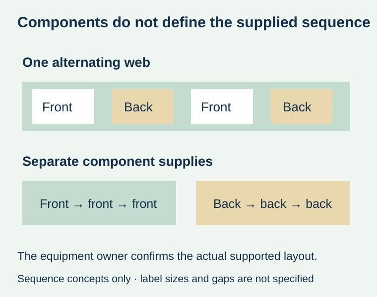
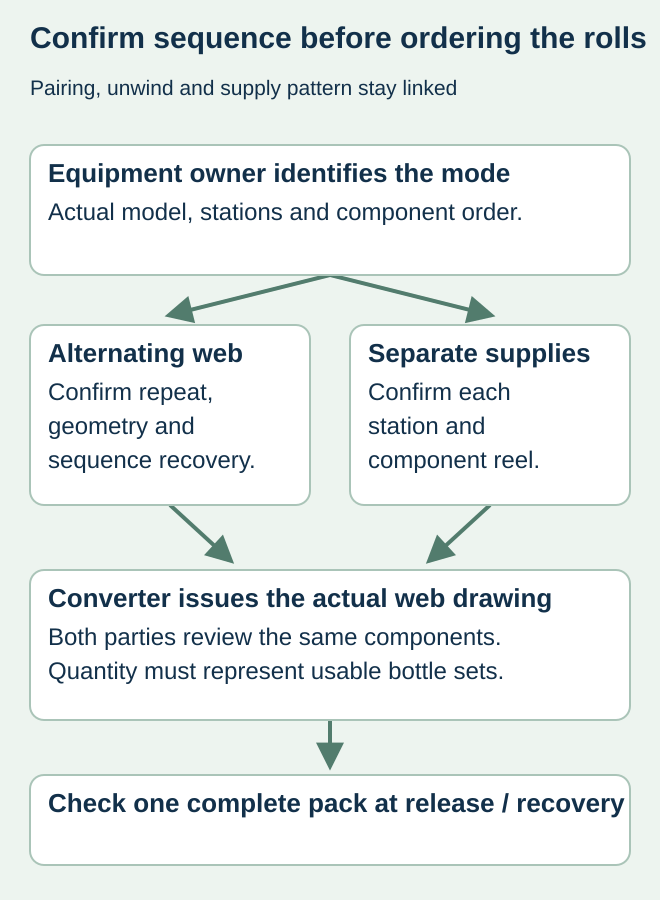

A winery orders matching front and back labels. The converter supplies two separate reels, but the intended applicator expects a front and back consecutively on one roll. The artwork pair can be correct while the delivered web cannot support the planned operating mode.
Confirm the applicator’s actual station and sequence requirement before the converter fixes the roll layout. “Front and back labels” describes components; it does not specify whether they alternate on a web, arrive on separate reels or use another explicitly supported arrangement.


Use the equipment requirement, not a universal preference
Primera’s AP360/AP362 manual gives a concrete model-specific example: its AP362 two-label mode requires the two labels printed consecutively on the same roll. That is evidence for that equipment and mode, not a rule for all bottle labelers. Other layouts need confirmation from their own equipment owners and documentation.
A line with independent component stations may instead require a separate supply at each station. Obtain its actual requirement rather than assuming that a drawing from a compact applicator can be carried over. Identify manual steps if an operator, rather than a machine, completes one component.
Define one complete supply repeat
| Web requirement | Confirm with the actual line | Converter’s matching output |
|---|---|---|
| Component sequence | Which label is applied first and next | An identified repeat, not only two PDFs |
| Station arrangement | Single supply path or independent component supplies | Alternating or separate reels as supported |
| Geometry | Label sizes, gaps and relevant detection limits | Actual web layout accepted by equipment owner |
| Orientation | Printed top and leading edge at each station | Shared unwind drawing, not an unexplained number |
| Quantity | Required complete sets and actual available components | Usable pairs, setup use and unmatched balance |
| Interruption | How the line identifies the next valid component | Supported recovery and first-pack verification |


Plan the exception before an alternating pair is interrupted
If one component is removed during inspection or a splice affects the sequence, the equipment owner must define how the intended next component is established. Do not assume that counting two labels at a time always preserves front/back phase. Ask how the supplied web identifies relevant exceptions and how the bottler verifies recovery without improvising unsafe machine adjustments.
For a hypothetical wine run, a correct front followed by another front could result in the wrong physical pack even when both artworks are approved. Preserve a specimen of the actual sequence and compare a complete applied bottle after setup or recovery. The quality team owns the applicable release procedure; this article does not set the machine parameters.
Keep pairing and sequence as two linked approvals
The matched-set guide identifies which front belongs with which back. The unwind guide identifies how a roll meets a particular station. The sequence record adds the order in which components reach that station. Approval of one does not silently approve the others.
Changing to another applicator can therefore require a new supply-layout review even when bottle, copy and label dimensions remain unchanged. Ask the converter whether an existing delivered reel can be used as supplied or whether a specifically supported rework or new production arrangement is needed. Do not assume that rewinding alone can transform every sequence.
Before printing, have the bottler and converter identify the same accepted web drawing, components and quantity basis. Retain the confirmed repeat and any agreed exception markings with the order. A roll format that reaches the line correctly is a purchasing deliverable, not an incidental packaging choice.
Discuss the unresolved label requirement
Send the exact applicator model and mode, front/back files and sizes, station drawing, required sequence and quantity of complete bottle sets. Ask the bottler and converter to acknowledge the same web layout. Prepare a label specification inquiry. The contact page opens an email draft and lists email or WhatsApp for attachments. Supply, proof options, testing, pricing and timing require project confirmation.